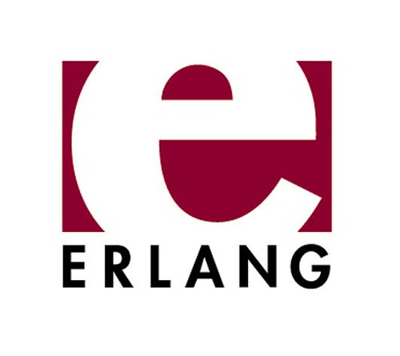
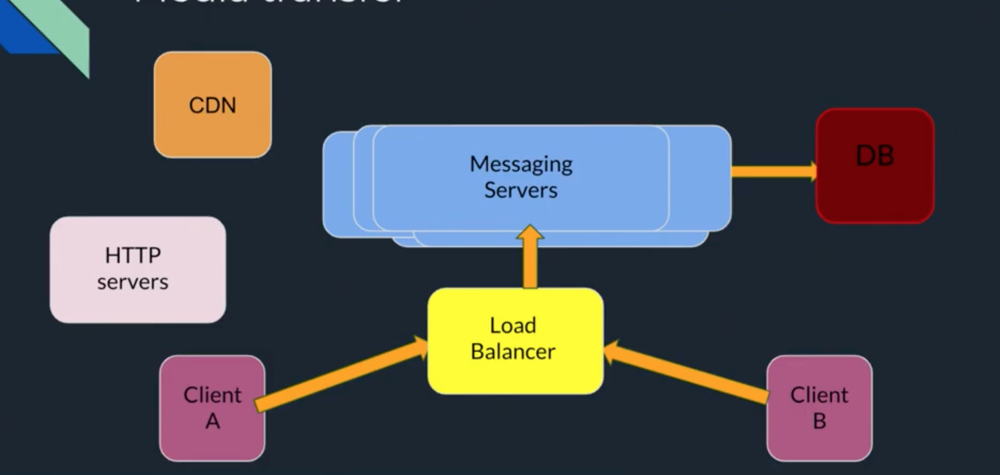

De acuerdo con la información oficial de whatsapp, hasta mayo 2018, los usuarios estaban
enviando 65 billones de mensajes por día. En promedio 29 mmillones de mensajes por
minuto, hoy en día debe haber aumentado considerablemente.
También es conocido que los usuario de whatsapp gastan 2 billones de minutos haciendo
llamadas de video y de audio por día.
En 2017 se hacían 55 millones de llamadas de voz por día, durando un total de 340
millones de minutos.
En agosto 2018, se reportó que entre mayo y julio 2018 juntos, estuvimso mas de 85
billones de horas utilizando whatsapp.
en contraste con las 31 billones de horas gastadas en facebook. Esto equivale a que caa
persona del muno utilizaría 11.5 horas whatsapp en este período de tiempo.
Y todo esto con
¿Cómo lo hacen?

¿Cómo lo hacen?
Cientos de Nodos
> 8000 nucleos
Cientos de terabytes de RAM
Linux Server
Erlang
Parches especiales de BEAM (BEAM es como la JVM de Java pero de Erlang)
FreeBSD
Yaws, lighttpd
PHP
XMPP personalizado
Arquitectura

Los mensajes multimedia se envían como audio video o imagen a un servidor HTTP y luego se
pone un hash al CDN donde debería haber la imagen y si corresponde se coloca un thumbnail en
base 64
Datos Curiosos
El chat de facebook fue escrito en Erlang en un principio en 2009, pero lo cambiaron por
la dificultad para conseguir programadores de Erlang
Para manejar el tráfico diario de whatsapp, se necesita un sistema confiable, los
creadores se enfocaron primero en esto, no en ganar dinero
Algun código se publica cada día al ambiente productivo, a menudo muchas veces en un
día. Gracias a que Erlang ayuda a ser agresivo en los fixes de producción.
Hot-loading
Whats tiene poco acoplamiento y maxima cohesión por lo cual es extremadamente escalabla
y se pueden hacer cambios casi incrementalmente.
Conclusiones
WhatsApp esta construido como un sistema robusto para asegurar la calidad a una eficiencia casi óptima
Tiene una cantidad de empleados absurda frente al servicio que brinda
Su compra/venta fue una de las transacciones más importantes de la historia de la tecnología